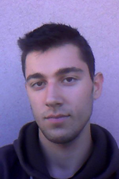
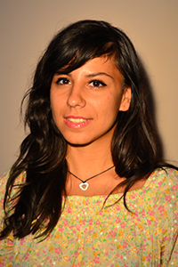
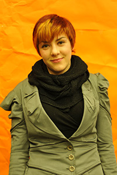
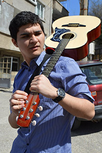
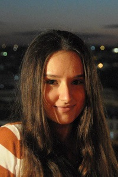

Egist Kristo
Videographer and Editor – Fall 2012
“The most important thing is not the video itself, but what it provokes in the soul of the people who watch it!”
Egist is a freshman from Albania who is really into video and film. He works at a professional studio and watches a lot of movies and documentaries. Egist also enjoys TV series that are beautiful mixes between a film and a documentary, like Doctor House. “I love shooting with my camera whenever I see something which attracts me. Is is beautiful to be able to save some moments from life with either a photo or a video. Beautiful moments are made to be shared.”
Kateryna Kostiuchenko
Videographer and Editor – Fall 2012
“This is a chance for students to receive the knowledge they want.”
Kateryna is a freshman from Ukraine who joined AUBGTalks for the opportunity to work in a nice team and to enjoy the events on campus at the same time. She was most excited about enabling students who are not able to attend events to see them later and thus not miss getting valuable information.

Mariya Marinova
Reporter, Videographer and Editor – Fall 2012
“I believe in the importance of the project and am happy to be a part of it!”
“I believe this is the best way to spend my last year at AUBG – meeting and interviewing the amazing guests who come to lecture at our university.” Maryia is a senior from Bulgaria studying Journalism and Mass Communications.

Desislava Papazova
Senior Assistant Project Manager – Fall 2013
“AUBGTalks is an innovative and insightful project with huge potential.”
Desislava is a graduating senior in Business Administration. Desi feels very attached and passionate about AUBG since it gave her the best four years of her life. When she saw what AUBGTalks is doing, she thought that is what she wanted to do. “AUBGTalks is one of those things that you just know has a huge potential and a great future. AUBGTalks makes the learning experience fun, convenient and accessible. I am very happy to be a part of this project!”

Farid Alijanov
Videographer – Spring – Fall 2013
“Besides the potential AUBGTalks has already reached, it has much more to explore.”
“I am here in this project filming guest speakers. Besides the technical part, I gain wonderful experience, learn about new things, broaden my views and most importantly – I film it, so other students can get that experience too. Stoil did a great job.”
Farid Alijanov is majoring in Journalism and Mass Communication. He is passionate about movie-making and his dream is to become a film director some day.

Katarina Djuknic
Public Relations and Social Media Specialist
“Great ideas need to be fixed in a tangible medium.”
“I appreciate the effort made by faculty, administration and students to bring many lecturers to AUBG each year. I think that all of the informational lectures should not be a one time thing. AUBGTalks allows you to watch the lectures at your leisure.”
Katarina Djuknic is a sophomore majoring in Journalism and Mass Communication, Political Science and International Relations.
Stella Zlatareva
Assistant Project Manager
“In the 21st century there are no limitations for the ones thirsty for knowledge. AUBGTalks is just another way to prove that.”
“I’ve always admired eclectics: people who incorporate the best parts of many different ideas. The AUBGTalks project stimulates the development of this characteristic in young students. We are part of a liberal arts institution; therefore, we highly value diversity. The more information we have access to, the more diverse we become.
Thanks to AUBGTalks enthusiasts, this information is just a few mouse clicks away…”